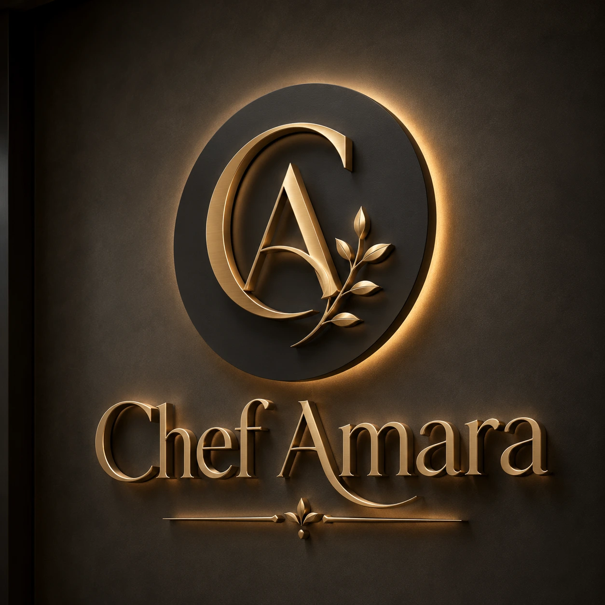

HAWA SACKO · INDEPENDENT DESIGNER
Distinctive brands.
Thoughtful design.
Logos, visual identities and brand presentations. A selection of work across technology, travel, property and lifestyle.
Explore selected work ↗
Chef Amara — Brand presentation / 2026Selected work
06 brands · Click a project to exploreDesign with
character.
I’m Hawa Sacko, founder of SACKO CONCEPT. I create visual identities and digital experiences for businesses. My work explores geometric monograms, expressive symbols and carefully composed brand presentations.
HAVE A PROJECT IN MIND?
Let’s shape your
brand’s next chapter.
Tell me about your business, your vision and what you need.
contact@sackoconcept.com ↗